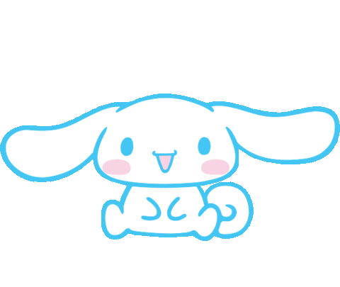
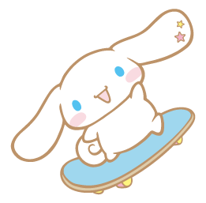
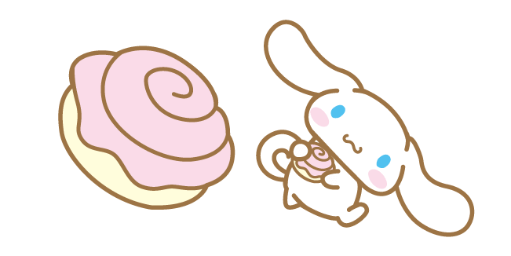

Learn more about Cinnamoroll, everyones favorite puppy!

Appearance and PersonalityCinnamoroll is a little puppy born on a cloud in the sky. He has blue eyes, pink cheeks, and a tail that resembles a cinnamon roll.He is very shy, but he loves his friends. Using his long ears, he is able to fly and help his friends when they need it! He lives at Café Cinnamon and was named by the owner based on his cinnamon roll tail. |
|
FriendsCinnamoroll has many friends. His friends are: Cappuccino a male puppy, Chiffon a female puppy, Mocha who has a crush on cinnamoroll, Milk a baby puppy, Coco and Nuts two baby puppies, Berry and Cherry, who are both demons. |
 |
|  | OriginCinnamoroll was created by Sanrio in 2001 under the name "Baby Cinnamon", however, it was later changed to cinnamoroll in 2003. Cinnamoroll has been increasinly popular since then, and recently celebrated his 15th anniversary! There has also been a permanent Cinnamoroll Cafe opened. |